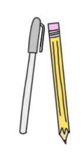
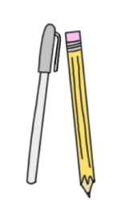

if you want to make a somewhat intricate design, you’ll probably want to sketch it out first! You can use a standard pencil, BUT I recommend a water soluble pen/pencil. why?
if you sketch with a water soluble pen, it WILL come off when you wash it! So, if you’re trying to design on a shirt, you won’t be afraid to draw on the shirt because it’ll wash away later! You can find them on Amazon or your local craft store!

you’ll also need some scissors to cut the floss at the beginning and end. You can just use normal scissors, but if you want to be extra careful, you can pick up some ~embroider scissors~ :). You can find them here or again, your local craft store!
If you haven't learned about all the tools yet, hover over "more tools" to learn about the rest! But, if you have, you can go back home and learn some example designs!